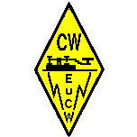

This is a brief description of the procedure to transmit/relay the quarterly EuCW bulletin.
The bulletin is transmitted in CW, on the ham bands, between the 7th and the 15th of January, April, July, and October. The transmission must be done in real time, and it must be performed entirely by human operators, sending with a manual or electronic keyer and receiving without the aid of CW decoders.
The bulletin is transmitted to be read and copied by as many CW operators as possible. Hence, the transmissions must happen at an adequate speed, usually between 15 and 22 wpm. QRQ transmissions are not forbidden, but priority should be given to QRS operations.
The text of the bulletin is first transmitted by several “primary” stations, run by volunteers. Then the text could (and should!) be relayed by any licensed ham radio operator using the same format and the same text received from a primary station.
The bulletin can be transmitted on any HF/VHF/UHF ham band, with the notable exception of 60m, where long QSOs are discouraged by the IARU Region 1 band plan (so please DO NOT use 60m).
The bulletin transmissions should preferably start on the hour (e.g., QTR 1700z, 1800z, 1900z etc.). A tentative schedule of some of the primary transmissions is available at eucw.org/qtcsked.html
The preferred QRGs for the transmission and relay of the EuCW bulletins include the topmost 5 kHz of the CW segment of each band, according to the IARU Region 1 band plan, namely 1833-1838 kHz, 3565-3570 kHz, 7035-7040 kHz, 10125-10130 kHz, 14065-14070 kHz, etc.
As broadcasting is generally NOT allowed by most of the amateur radio license conditions, a station transmitting or relaying the EuCW bulletin (a TX-STN in the following) MUST first establish a contact (QSO) with a receiving station (RX-STN in the following).
In order to engage an RX-STN, the TX-STN should call “CQ CQ EUCW NEWS” to indicate that it is looking for an RX-STN ready to receive the EuCW bulletin.
When a station responds to the CQ call, the TX-STN and RX-STN must exchange RST/NAME/QTH as a minimum. Then the TX-STN will send “EUCW NEWS FOLLOWS = QRV? KN” and the RX-STN should confirm that it is ready to copy with “QRV BK” (I am ready) or “GA BK” (for “go ahead”).
Bulletins are divided into separate QTCs, usually one item for each member club. The total number of QTCs in a bulletin is declared at the beginning of the bulletin. The current QTC number must be sent before a QTC, as in “QTC 3/8” (meaning “this is the QTC number 3 out of a total of 8).
The TX-STN MUST over to the RX-STN after each QTC, to confirm copy, as in “QTC 3/8 = HW? RX-STN DE TX-STN KN”
The RX-STN MUST acknowledge copy of each QTC, even with a simple “de RX-STN = QSL QTC 3/8 BK”.
If the RX-STN needs a repeat, because of QRM or QSB, they should
NOT confirm copy and must instead indicate what needs to be
repeated.
If RX-STN has lost everything after the word “PARTY” then they should
ask “de RX-STN = QTC 3/8 PSE RPT AA PARTY” (Please repeat all after
PARTY). To ask a repeat for anything before the word “PARTY” it will ask
“de RX-STN = QTC 3/8 PSE RPT AB PARTY” (Please repeat all before
PARTY).
When all the QTCs have been transmitted, TX-STN might take other calls, if they like, and log them.
In any case and under all circumstances, TX-STN and RX-STN MUST observe the terms of their amateur radio license (e.g,, with respect to the frequency at which they need to send their callsign), they MUST operate in agreement to the IARU Region 1 band plan, and above all, they should excel in courtesy and good operating manners.
List of available Bulletins edited by RM2D aka SM6LRR
2025Q1 from 2025-01-19 (ASCII TXT)
2024Q4 from 2024-10-10 (ASCII TXT)
2024Q3 from 2024-07-10 (ASCII TXT)
2024Q2 from 2024-04-05 (ASCII TXT)
2024Q1 from 2024-01-10 (ASCII TXT)
2023Q4 from 2023-10-05 (ASCII TXT)
2023Q3 from 2023-07-04 (ASCII TXT)
2023Q2 from 2023-04-05 (ASCII TXT)
2023Q1 from 2023-01-08 (ASCII TXT)
2022Q4 from 2022-10-07 (ASCII TXT)
List of available Bulletins edited by IZ2FME
2021/5 from 2021-12-07 (ASCII TXT)
2021/4 from 2021-10-27 (ASCII TXT)
2021/3 from 2021-03-24 (ASCII TXT)
2021/2 from 2021-03-15 (ASCII TXT)
2021/1 from 2021-02-05 (ASCII TXT)
2020/2 from 2020-12-18 (ASCII TXT)
2020/1 from 2020-08-21 (ASCII TXT)
2019/3 from 2019-12-19 (ASCII TXT)
2019/2 from 2019-12-05 (ASCII TXT)
2019/1 from 2019-10-07 (ASCII TXT)